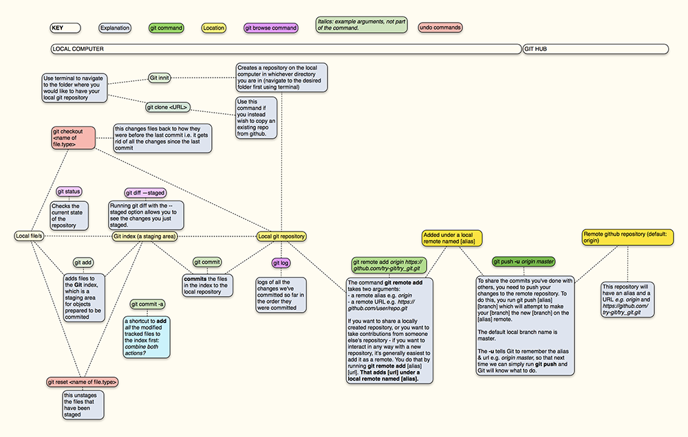
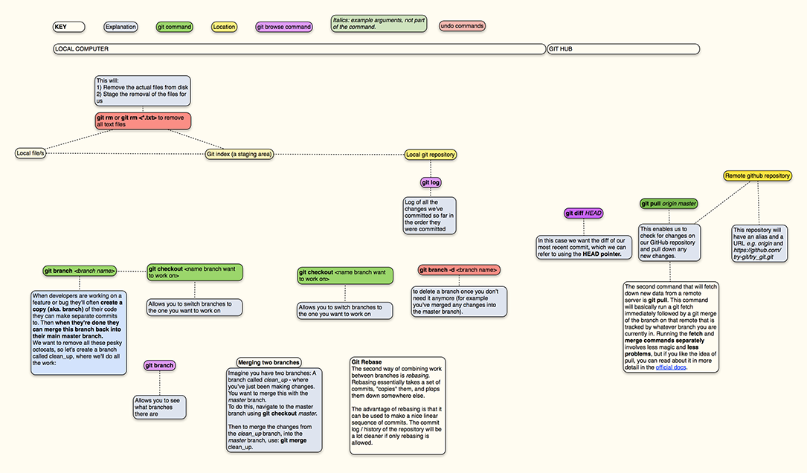

Git is an open-source version control system. Git is a command-line tool, and Github is the hub for all Git activity, where developers can store their projects, network and collaborate.

This image provides a visual summary of the different steps involved in add, commiting and pushing changes to Github.
This image provides a visual summary of the different steps involved in pulling the latest commits from Github.
